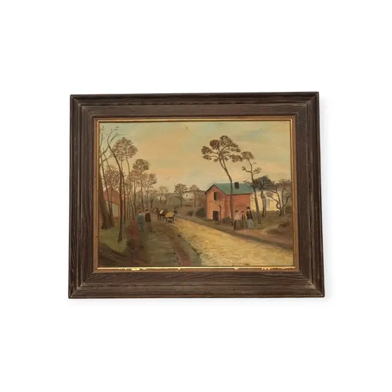
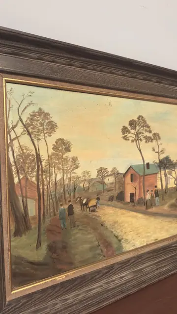
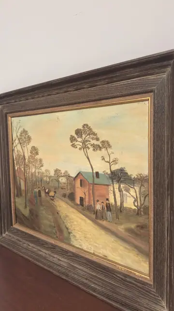

Paintings & Prints
Country Road with Red House and Horse Cart, Framed
Unknown · mid 20th century
Price Upon Request



About the Item
A sandy road runs from the lower right into the middle distance, flanked on the left by a stand of tall bare-branched trees and on the right by a two-storey red brick house with a green roof. Two men in dark coats stand on the verge watching a white horse and cart go by; a small group in long dark clothes waits by the house wall. The sky is a pale wash of buttermilk and eggshell blue, the fields a dry olive and ochre, and the whole thing is painted flatly and rather stiffly, in the naive manner, with the trees drawn in thin dark lines against the light. Set in a deep cerused oak frame with a gold inner lip. Medium: oil on canvas board. Condition: The surface has an aged, slightly dirty varnish with a warm yellow cast, and small dark specks scattered across the sky. A patch of scuffing or abrasion shows on the gold inner lip at the lower centre. No tears or losses visible.
Details
- Creator:
- Unknown
- Creation Year:
- mid 20th century
- Dimensions:
- Height: 24.5 in (62.23 cm)
Width: 30.25 in (76.84 cm)
outside of frame - Medium:
- oil on canvas board
- Period:
- 20Th
- Condition:
- Offered in the condition shown in the photographs.
- Reference Number:
- VO-126
- Documentation:
- no certificate photographed